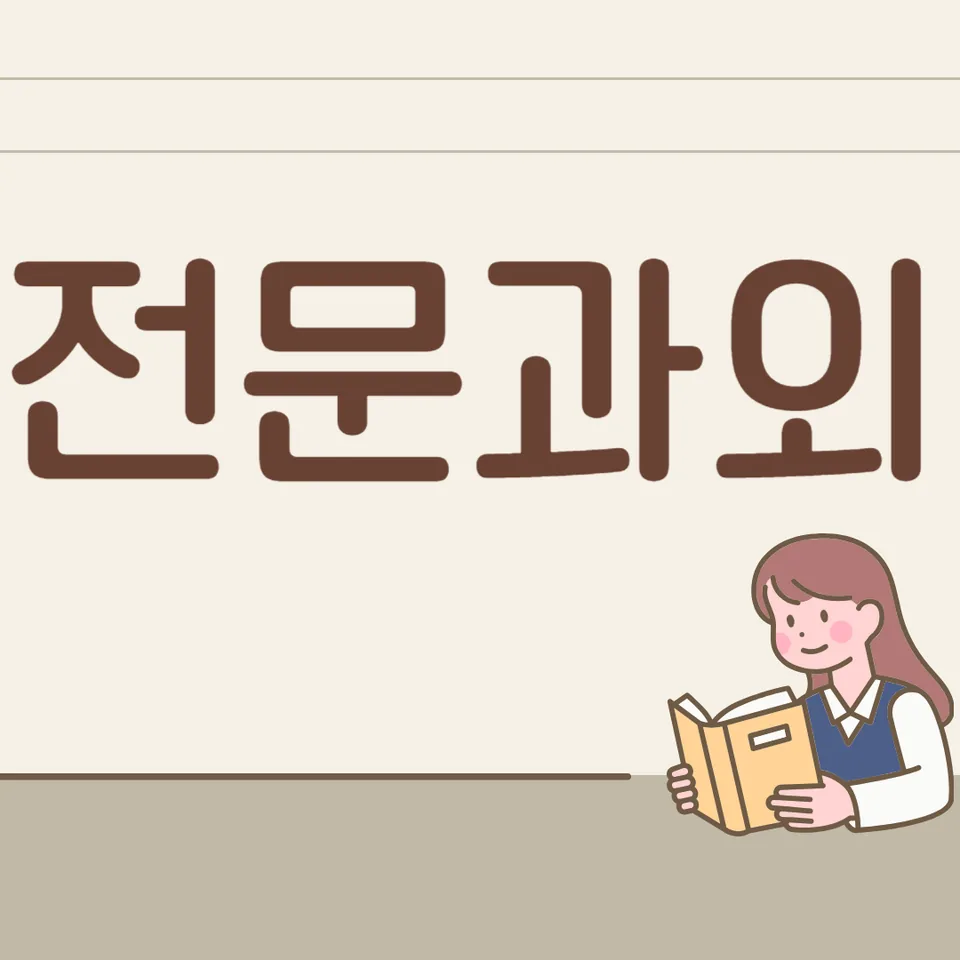

PageType : SUBJECT
URL : /경기도과외/시흥시과외/목감동과외/목감동영어과외/
지역 교육환경이 영어 학습에 미치는 영향
목감동영어과외를 시작하면 가장 먼저 마주하는 변화는 “환경이 학습의 속도를 만든다”는 감각입니다. 학교 수업의 리듬, 교실에서 영어를 쓰는 빈도, 방과후 학습 분위기가 서로 맞물리면서 학생이 공부 시간을 어디에 쓰는지 달라집니다. 목감동영어과외 안에서도 학생들은 독해·듣기·어휘를 따로 떼어내기보다, 같은 하루의 흐름 속에서 자연스럽게 연결되도록 경험을 쌓습니다. 특히 지역 학습 문화가 조용히 유지되는 편이면, 학생이 스스로 질문을 덜 하다가 이해가 늦게 드러나는 경우가 생깁니다. 반대로 활동형 분위기가 강하면, 문장 구상은 빨리 되지만 내신용 정확도가 뒤늦게 흔들리기도 합니다.
학교 과제와 연계된 목표가 뚜렷할수록 목감동영어과외의 학습이 단단해집니다. 학생은 단순히 문제를 푸는 시간을 늘리는 방식보다, 오늘 한 공부가 다음 주 내신 시험 범위와 어떤 식으로 이어지는지 체감할 때 더 오래 갑니다. 학부모가 느끼는 고민도 대체로 여기에서 시작합니다. “열심히 하는데 왜 점수가 들쭉날쭉할까?”라는 질문은 대개 공부량보다 복습 시점과 오답 처리 방식이 엇갈릴 때 커집니다. 목감동영어과외에서는 영어 실력이 한 번에 오르기보다, 학습이 누적되는 단계에서 조용히 정리되는 순간이 중요하다고 보고 접근합니다.
학교마다 달라지는 영어 평가 방식
목감동영어과외를 통해 학교별 영어 평가 방식의 차이를 체감하는 학생이 많습니다. 같은 영어라도 학교는 학생이 어떤 능력을 보여주길 원하는지 다르게 설계합니다. 어떤 학교는 내신에서 독해 중심 채점이 강하고, 다른 학교는 문장 이해와 구문 적용에 무게가 실립니다. 수행평가가 들어가는 학교에서는 듣기·말하기·쓰기 흐름이 수업 경험과 맞물리면서, 시험 전날까지도 영어 학습이 단절되지 않도록 공부 습관이 조정됩니다.
평가 방식이 바뀌면 학생의 태도도 바뀝니다. 시험형 문제에 익숙한 학생은 시험 기간에 속도가 붙지만, 어휘와 문법의 누적이 약하면 이해가 순간적으로 끊깁니다. 반대로 수행과정을 통해 영어를 해본 학생은 말하기에 자신이 붙지만, 내신 독해에서 지시문을 놓치거나 보기 판단 속도가 느려질 수 있습니다. 목감동영어과외에서는 이런 차이를 “처음부터 잘하는 방법”이 아니라, 시험의 형태에 맞춰 복습과 오답의 우선순위를 재배치하는 방식으로 다룹니다.
학생들이 영어에서 어려움을 느끼는 시점
학생들이 영어를 어렵다고 느끼는 시점은 대체로 비슷한 패턴을 보입니다. 첫째는 새 단원이 시작될 때입니다. 어휘가 빠르게 추가되고 문장 이해가 요구되는데, 학생이 듣기에서 놓친 부분을 읽기에서 보완하려는 시도를 늦게 합니다. 둘째는 중간고사 직전 즈음입니다. 그때부터는 독해 속도가 시험 시간에 맞춰야 해서, 같은 문장을 읽더라도 집중의 방식이 달라집니다. 이 구간에서 목감동영어과외의 역할은 “해설을 더 듣는 것”보다, 왜 틀렸는지부터 확인하게 만드는 데 있습니다.
또 한 가지는 학기 후반에 나타나는 피로감입니다. 어휘·문법·듣기 학습이 누적될수록 학생은 자신도 모르게 ‘암기 모드’로 들어가고, 그 결과 구문 이해는 약해집니다. 목감동영어과외에서는 영어 실력이 성장하는 단계가 복잡한 이유를 설명하기보다, 학생이 체감할 수 있는 형태로 학습 과정의 균열을 찾아냅니다. 예를 들어 듣기에서 놓친 단서를 독해 지문에서 다시 찾는 연습, 자주 틀리는 어휘의 등장 위치를 확인하는 습관이 쌓이면, 학습이 감정이 아니라 데이터처럼 정리됩니다.
학년 변화에 따른 영어 학습의 차이
학년이 올라갈수록 학습 부담이 단순히 양으로만 늘지 않고, 영어를 다루는 방식이 바뀝니다. 낮은 학년에서는 문장 단위로 해석이 중심이 되지만, 학년이 올라가면 지문 흐름과 논리 연결이 중요해집니다. 이때 학생은 문장 뜻을 알면서도 전체 내용을 놓치거나, 문단 간 전환을 읽지 못해 독해 정답이 흔들리는 경우가 생깁니다. 목감동영어과외에서는 학년 상승기에 맞춰 공부 습관을 바꿔야 한다는 점을 강조합니다.
고학년이 되면 시험 기간에 학습 패턴도 달라집니다. “어제 배운 것”보다 “오늘 복습할 것”이 성적에 더 직접 영향을 주는 시기가 오기 때문입니다. 학생이 오답을 정리하지 않은 채 다음 단원으로 넘어가면, 어휘와 구문이 겹쳐서 머릿속에서 순서가 흐트러집니다. 이 흐름을 막는 핵심은 자기주도학습으로 넘어가는 타이밍입니다. 혼자 공부하려는 마음이 생겨도, 무엇을 복습하고 어떤 오답을 다시 풀어야 하는지 기준이 없으면 시행착오가 길어집니다. 목감동영어과외는 그 기준을 학습 계획에 연결해 주는 방식으로 학습을 지속시키도록 돕습니다.
내신과 수행평가를 함께 준비하는 방법
내신과 수행평가는 같은 영어를 요구하지만, 학생이 준비하는 방식이 달라야 합니다. 목감동영어과외에서 관찰되는 전형적인 변화는 “시험 직전 정리”가 아니라 “학기 중 누적 정리”로 준비 방식이 이동한다는 점입니다. 내신은 범위가 정해져 있고, 지문 유형이 반복되기 때문에 독해·문장 이해·어휘가 함께 묶여야 점수가 안정됩니다. 수행평가가 포함된 학교에서는 말하기나 활동의 흐름이 수업과 연결되며, 듣기와 읽기의 균형이 흐트러지면 수행에서 자신감이 흔들리기도 합니다.
학부모가 자주 묻는 질문은 “둘 다 잡으려면 뭘 먼저 해야 하나요?”입니다. 답은 하나로 고정되기보다, 학교에서 실제로 평가하는 포인트에 따라 조정됩니다. 목감동영어과외에서는 내신에서 자주 등장하는 오답 유형을 먼저 잡고, 그 오답이 수행 과정에서도 같은 실수로 이어지는지 확인합니다. 예컨대 지시문 오독이 내신에서 잦다면, 수행에서도 안내문을 따라 움직이는 연습을 붙입니다. 이렇게 내신과 수행평가가 같은 방향으로 움직이게 하면, 영어 공부가 단절되지 않고 복습과 오답이 자연스럽게 이어집니다.
꾸준한 학습 습관이 만드는 영어 실력
영어 실력은 한 번의 집중으로 만들어지기보다, 공부습관이 반복되며 누적될 때 형성됩니다. 목감동영어과외를 받는 학생들 가운데 “매일 조금씩”을 실천하는 학생이 가장 빠르게 학습의 흐름을 이해합니다. 듣기는 매일 짧게라도 감각을 유지해야 하고, 독해는 읽는 시간이 늘어나는 것보다 이해의 근거가 축적되어야 합니다. 어휘와 문법 또한 외우는 행위 자체보다, 실제 지문에서 다시 만났을 때 반응하는 속도가 중요해집니다.
자기주도학습이 자리 잡는 과정에서는 계획을 ‘세우는 것’보다 ‘유지하는 것’이 어렵습니다. 시험 주간이 다가오면 학생은 급하게 다음 단원으로 넘어가고 싶은 마음이 커지지만, 목감동영어과외에서는 학습 계획을 유지할 수 있게 복습 주기를 조정합니다. 오답이 남아 있는 상태에서 속도를 높이면 영어 실력은 늘지 않고 혼란만 커집니다. 그래서 복습과 오답이 학습의 중심에 오고, 문장 이해와 구문 감각이 다시 연결됩니다. 결국 꾸준함은 부담이 아니라 신호가 됩니다. “내가 다음에 뭘 해야 하는지 이미 알고 있다”는 상태가 되면 공부는 훨씬 안정적으로 굴러갑니다.
복습과 오답 관리가 중요한 이유
오답은 단순히 틀린 문제로 끝나지 않고, 학생의 학습 과정에서 반복되는 약점을 보여주는 지도입니다. 목감동영어과외에서는 오답을 빨리 지우는 방식이 아니라, 오답이 생긴 이유를 분해해 다시 보는 습관을 만듭니다. 예를 들어 독해에서 정답을 고르지 못한 날에도, 듣기에서 놓친 단서와 어휘 인지 실패가 같은 계열로 묶이는 경우가 많습니다. 이런 구조를 확인하면 복습은 막연한 반복이 아니라 ‘정확한 교정’이 됩니다.
복습과 오답 정리가 이어지는 과정은 시험 기간 학습 패턴에도 영향을 줍니다. 시험 직전 학생들은 대개 문제 수를 늘리려 하지만, 목감동영어과외에서는 오답이 남긴 공백을 먼저 메우는 방식이 더 효율적이라고 봅니다. 시간 효율은 더 많은 페이지를 푸는 데서만 나오지 않습니다. 같은 시간이라면, 다음에 다시 틀릴 가능성이 높은 유형을 먼저 다루고, 오답의 원인을 기록해 두는 쪽이 결과를 바꿉니다. 이 방식은 문법을 설명하는 방식이 아니라, 학생이 실제 문제에서 적용하게 만드는 흐름으로 이어집니다.
영어 학습에서 확인해야 할 핵심 요소
목감동영어과외를 통해 학생이 스스로 점검할 수 있게 되는 핵심은 “무엇이 흔들리면 영어 실력이 멈추는가”를 아는 것입니다. 첫째는 독해와 문장 이해의 연결입니다. 문장을 해석하는 능력과 지문 전체의 논리를 붙이는 능력은 같은 줄에 있어도 같은 속도로 성장하지 않습니다. 둘째는 어휘 학습이 누적되는 과정입니다. 어휘가 늘어도 읽기에서 즉시 반응하지 못하면, 학생은 점점 읽는 데 지쳐 갑니다. 셋째는 듣기와 읽기의 균형입니다. 듣기에서 단서를 놓치면 읽기에서 보완이 늦어져 오답이 반복됩니다.
넷째는 학교 내신 범위와 학습 계획이 연결되는지 점검하는 습관입니다. 시험 범위가 정해져 있는데도 공부가 무작위로 흘러가면, 복습과 오답이 체계적으로 이어지기 어렵습니다. 다섯째는 공부습관과 자기주도학습이 함께 굴러가는지 확인하는 것입니다. 공부가 시작되면 “해설을 따라가는 시간”이 많아지고, 스스로 정리하는 시간이 줄어들 때 학습이 끊기기 쉽습니다. 목감동영어과외에서는 학생이 오답을 다시 풀기 위해 스스로 돌아가는 과정을 만들고, 복습이 습관이 되도록 학습 계획을 조정합니다.
- 학교 시험 범위와 학습 계획이 연결되고 있는지 확인합니다.
- 독해·문법·어휘를 분리하지 않고 함께 학습하는 습관을 기릅니다.
- 오답의 원인을 분석하고 반복되는 실수를 줄이는 과정을 이어갑니다.
- 정기적인 복습으로 학습 내용을 장기 기억으로 연결합니다.
자주 묻는 질문
영어 학습은 언제부터 체계적으로 준비하는 것이 좋을까요?
학년이 바뀌기 직전부터가 효과적입니다. 특히 어휘가 누적되고 독해가 지문 중심으로 바뀌는 구간을 놓치면, 듣기에서 생긴 공백이 읽기에서 늦게 드러나기 때문입니다. 목감동영어과외에서는 학교 일정과 내신 범위 변화를 기준으로 계획을 조정해 학습 부담이 시작되는 타이밍을 함께 맞춥니다.
학교 내신과 모의고사는 어떻게 함께 준비해야 하나요?
내신은 학교가 원하는 평가 흐름을 먼저 반영하고, 모의고사는 그 흐름을 다른 형식에 적용하는 훈련으로 확장하는 방식이 안정적입니다. 목감동영어과외에서는 오답을 공통 유형으로 묶어 복습 우선순위를 정리해, 시험 기간에 시간이 효율적으로 쓰이게 돕습니다.
영어 독해 실력은 어떤 과정으로 향상될 수 있나요?
독해는 문장 이해가 쌓여 지문으로 확장될 때 성장합니다. 어휘가 바로 반응하지 않으면 속도가 떨어지고, 구문을 놓치면 논리 연결이 끊깁니다. 목감동영어과외에서는 듣기에서 잡은 단서를 읽기에서 다시 확인하는 연습을 통해, 이해의 근거가 연속되도록 만듭니다.
어휘와 문법은 어떤 순서로 학습하는 것이 효과적인가요?
외우는 순서보다 ‘등장한 문장에서 적용되는 순서’를 기준으로 잡는 것이 좋습니다. 어휘가 먼저여도 지문에서 바로 쓰이지 않으면 오래 남지 않고, 문법도 문제 풀이 설명으로만 끝나면 적용이 약해집니다. 목감동영어과외에서는 어휘·문법·구문이 독해에서 만나는 방식으로 누적되게 계획을 구성합니다.
공부 습관을 꾸준히 유지하려면 무엇이 중요할까요?
동기가 아니라 기준이 중요합니다. 오늘 할 공부가 무엇을 목표로 하는지, 무엇을 복습해야 하는지, 오답은 어떤 방식으로 다시 봐야 하는지 기준이 서면 자기주도학습이 유지됩니다. 목감동영어과외에서는 시험 전후로 학습 패턴이 흔들리지 않도록 복습과 오답 관리 루틴을 중심으로 연결합니다.
